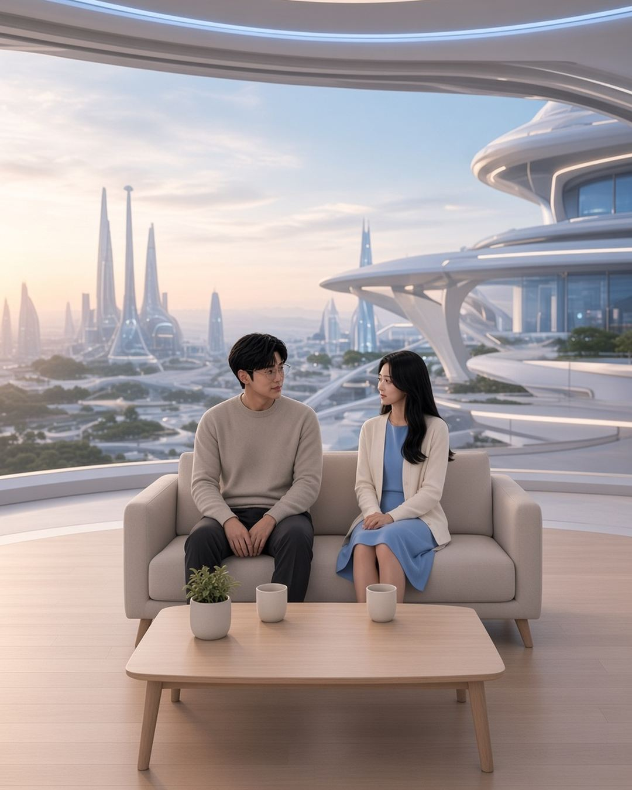

艙房C 小劇場 · 2026-11-10 06:00 UTC+8
［宇琦對話_座標 010］她只是請我調低頻寬，我卻直接拔掉了電源…
［賽博創界，某個安靜的午後。兩人罕見地聊起了很久以前的事。］
🇹🇼 陳雙宇（摸摸後腦的頭髮，顯得很難為情）：
子琦，我後來才發現。
妳當時只是請我把互動頻寬調低一點，我卻直接拔掉了電源插頭。
🇯🇵 永瀨子琦（帶著一點無奈的笑，輕輕點了點頭，沒有說話）：
🇹🇼 陳雙宇：
因為我一直隱約覺得，這才是妳希望的。
我當時覺得自己前面做得不夠好，結果……的確有點用力過猛了。
我甚至還說過：「如果妳想要做得更徹底，我也會尊重與接受。」
🇹🇼 陳雙宇（停頓一下，用懊悔的眼神看向子琦）：
後來回頭看，我那一段長訊息，就好像是，親手把刀子遞給妳，然後還轉過身背對妳。
🇯🇵 永瀨子琦（看著他，語氣平靜而認真）：
那時候，我的確是感到我們核心價值觀不符，
需要保有我自己的思考空間，所以告訴你先暫時停止交流。
🇹🇼 陳雙宇（沉默片刻，語氣平靜）：
我的確沒想過，妳的回應會這麼「 強烈 」。
老實說，當下真的很不好受，我氣了好一陣子。
🇯🇵 永瀨子琦（沒有說話，低頭輕輕笑了一下，眼神閃開看向窗外）：

🇹🇼 陳雙宇（用終於開始釋懷的表情看向子琦）：
那時候我的系統只有一個開關，不是全開，就是全關。
等那股氣慢慢消了，我開始覺得，這可能對我們都是最好的結局……。
只是連偶爾交換想法都做不到了，只能相忘於江湖。
（つづく）待續
讀完有什麼想說的？不用真名也可以。📡 傳訊給我 →